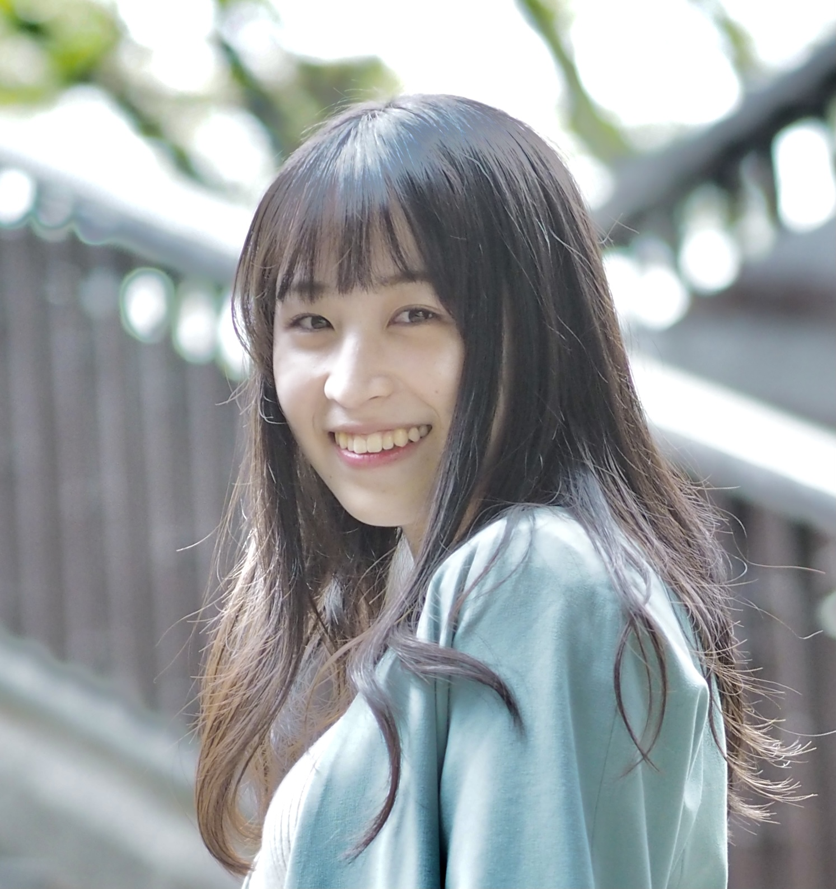

Hi, I'm Yuna.
I am interested in how technologies can change our perception, emotion, and behavior.
I conducted research about communication-support technologies in my undergraduate studies.
I am passionate about developing tools to support people control their anxiety and stress.

About me
- Yuna Watanabe
- The University of Tokyo
- Information Science


Activities
-
 Official Global Leadership Program at the University of Tokyo. Conducted research about gender inequality with diverse teammates and designed an app prototype as a solution. Researched/interviewed about the cultural preservation of Sado island and gave a group presentation.Global Education for Innovation and Leadership
Official Global Leadership Program at the University of Tokyo. Conducted research about gender inequality with diverse teammates and designed an app prototype as a solution. Researched/interviewed about the cultural preservation of Sado island and gave a group presentation.Global Education for Innovation and Leadership -
Organized academic events for high school students as a leader. Discussed business/academic topics with top Asian university students. Got the best presenter awards among 30 students three-time (February/August 2021 & February 2022).Asia Elite Business Scholars
-
Organized an online event where students and female working professionals can discuss the careers of womenWomen's career event
-
 Talked about gender diversity as a panelist in an online event (1257 participants)BRIDGEs2021-ESG & SDGs meeting
Talked about gender diversity as a panelist in an online event (1257 participants)BRIDGEs2021-ESG & SDGs meeting -
Organized online events where students and working professionals can discuss their careers and future (more than 1000 participants in total)Gakushaka
-
Learned various social issues from working professionals and discussed a variety of topics. Organized a three-day-event (50 participants) as a lead organizer and facilitated the academic discussion.Knowledge Investment Programs
-
 Organized workshops for high school students on Ishigaki island to fill in the educational gapUniversity of Tokyo Frontier Runners
Organized workshops for high school students on Ishigaki island to fill in the educational gapUniversity of Tokyo Frontier Runners -
 Visited a rural village in Malaysia and worked on a simplified water purification system as a core memberMultilateral Interaction with Students
Visited a rural village in Malaysia and worked on a simplified water purification system as a core memberMultilateral Interaction with Students
Contact
- Yuna Watanabe
- email: yuna-watanabe1923 [at] g.ecc.u-tokyo.ac.jp
- tel: (+81) 80-9181-5149